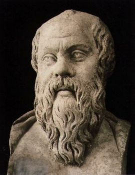

Sokrat (Sokrates) (M.Ö.470-400)

Risale-i Nur'da kurtuluþa erenler arasýnda sayýlan Sokrat, günümüzden yaklaþýk iki bin beþ yüz yýl önce yaþamýþ olmasýna raðmen, günümüze kadar fikirleri ve düþünceleri ulaþmýþ filozoflarýn ileri gelenlerinden birisidir. Fikirleriyle yaþayýp fikirleri uðruna, hiç tereddüt etmeden ve gözünü kýrpmadan hayatýný feda eden mümtaz þahsiyetlerden biridir. Devrin müstebitlerini kaale almadýðý gibi onlarla alay etmiþtir. Sokrat'ýn hayat hikayesi ile ilgili muhtelif nakiller mevcuttur. Deðiþik kesimlerce farklý farklý deðerlendirmelere rastlamak mümkündür.Sokrat, M. Ö. 470 (bazý kaynaklar da 469, 468 tarihlerini gösterirler) yýlýnda doðdu. Hayatý boyunca sadece üç kez Atina'dan ayrýldý. Geliþi güzel giyinir, kendi evinden çok baþkalarýnýn evinde zaman geçirirdi. Savaþta en öne atýlacak kadar gözü pekti. Her sýnýftan insanla rahatça dost olur, her konuyu açýk bir þekilde tartýþýrdý. Devletin yanlýþ politikalarýný eleþtirmekten çekinmezdi. Her zaman açýk yüreklilikle bilgisinin yetersizliðini ifade ederdi. Yazýlý eser býrakmadý ancak, baþta Eflatun (Platon) olmak üzere talebeleri tarafýndan fikirleri kayda geçirilerek günümüze kadar ulaþmasýný saðladýlar. Dolayýsýyla bilinen ve tanýnan Sokrat, Eflatun'un yazdýðý ve bildirdiði Sokrat'týr. Kendisi yazý yazmaktan çok, konuþmayý seven ve yazmayý pek sevmeyen bir kiþiliðe sahipti.
Sokrat önceleri tabiatla, canlýlarýn çoðalma ve ölümleriyle ilgilendi. Bununla beraber matematikle de ilgilendi. Bu arada insanlarýn inançlarýyla ilgilenip bunlarý sorgulamaya baþladý. Yanlýþ olarak gördüðü þeyleri eleþtirdi. Bilahare bu davranýþý idam ediliþine kadar sürüp gidecek bir serüveni de baþlatmýþ oldu. Bilim ve bilgi konusunda insanlarýn eksik taraflarýný göstermeye ve sahip olduklarýný zannettikleri bilgilerin yetersizliði ve eksikliðini göstermeye çalýþtý.
Yazma yerine konuþmayý tercih eden Sokrat, bu iþi yalnýz deðil de insanlarla birlikte ve onlarý düþünmeye yönlendirerek yapmaya çalýþtý. Karþýsýndakine sorular sormak suretiyle konuþturmaya çalýþtý. Ýnsanýn kendisini tanýmasý üzerinde kafa yordu. Bilginin amacýnýn pratik veya teorikten öte bir yaþama sanatý olduðuna inandý.
En çok deðer verdiði ve üzerinde durduðu konularýn baþýnda "erdem" gelir. Kendisi de çoðu kez erdemli kiþilere örnek olarak gösterilmiþtir. Erdemsizliði bilgisizliðe baðlar ve erdemi bilgiyle eþdeðer tutar. Ona göre bilerek ve isteyerek kötülük edilmez. Sokrat, karþýlýklý konuþmalarda iyilik, doðruluk, cesaret v.b. deðerler üzerinde ayrý ayrý durur. Bunlarýn her birine sahip olmanýn bilgiye dayandýðýný ve bilgi sahibi olmanýn gereðine vurgu yapar. Ýnsanlarý mutluluða götürecek yegane unsurun erdem olduðunu ifade eder. Sokrat'a göre cemiyet, erdemli insanlardan teþekkül eden bir topluluktur.
Sokrat'ýn yaþadýðý dönemdeki Atina demokrasisinde, kanunlar güçlülerden yanadýr. Ýnsanlar eþit doðarlar ama, kanunlar güçlülerin elinde güçsüzleri ezmenin bir aracý halindedir. Adeta güçlünün güçsüzü yenmesi tabii karþýlanmakta ve hakký olarak telakki edilmektedir. Dolayýsýyla herkes kuvvetli olmaya çalýþmaktadýr. Yaklaþýk 400 bin nüfusun olduðu ülkede hiçbir hakký olmayan kölelerin sayýsý 250 bin civarýnda idi. 150 bin olan vatandaþlardan da çok azý yönetime katýlabiliyordu. Sokrat'ýn "herkes yönetime katýlabilmeli" fikri idarecilerin hoþuna gitmedi. Ýktidarlarýný sarsýcý fikirlerinden, farklý inanca sahip olmasýndan, tanrýlara saygý göstermemesinden, herkesi ve her þeyi eleþtirmesinden dolayý, idareciler tarafýndan cezalandýrýlmasýný netice verdi.
Diðer yandan devlete ve mevcut yasalara baðlýlýðýný sürekli devam ettirdi. Kendisini idama mahkum etmeleri üzerine baldýran zehrini içerek ölüme gitti. Kendisini mahkum edenlere karþý yaptýðý savunmasýnda haklýlýðýný ve gittiði yolun doðruluðunu savunmaya devam etti. Kendisini idam etmekle cezalandýrýlanýn kendisi deðil idama karar verenler olduðunu, kendisinin onlara Tanrýnýn bir lütfü olduðunu, bu hareketleriyle günah iþlediklerini, halkýn iyiliði için uyarýlarda bulunduðunu ve sadece iyiliklerini düþündüðünü ifade etti. Ahiret hayatýnýn varlýðýna inandýðýný sözlerine ekledi.
Sokrat, insanlarý farklý inanç ve tanrýlara yöneltmek, geleneklere karþý gelip sarsmak, gençliði yoldan saptýrmak þeklindeki ithamlarla yargýlanarak idama mahkum edildi. Mahkeme bu kararý 275'e karþý 281 oyla aldý. Bu geliþmeler karþýsýnda kaçabilme imkaný varken kaçmadýðý gibi, idamdan kurtulmak maksadýyla düþüncelerinden ödün de vermedi. Ölümü gülümseyerek karþýladý ve o zamanýn kurallarý gereði, idama mahkum edilenlere içirilen baldýran zehrini, þerbet içer gibi içti. (M.Ö. 400 veya 399.)
Aslýnda Sokrat, ne isyan etmiþti, ne de halký isyana kýþkýrtmýþtý. Yani mevcut iktidara karþý herhangi bir eyleme giriþmemiþti. Yaptýðý tek þey doðru bildiklerini söylemek, yanlýþ gördüklerini eleþtirmekti. Yani hür düþünceden yana idi. Bu durum yöneticilerin, halký kendi istedikleri gibi yönetenlerin hoþuna gitmiyor, kendi düzenlerinin sarsýlmasýndan endiþe ediyorlardý. Düzenin devamý Sokrat gibilerinin yaþamamalarýný icap ettiriyordu. Nitekim öyle de yaptýlar ve yaþamamasý gerektiðine hükmettiler. O, güçlülerin deðil, akýllýlarýn iktidarýný savundu. Bu fikrinden de hiçbir güç onu vazgeçiremedi. Maddeten yok edildiyse de fikirleriyle yaþamaya devam etti.
***
Bediüzzaman Hazretlerini, hayatý boyunca hapishane ve zindanlarda yok etmeye çalýþanlar baþarýlý olamadýklarý gibi, fikirlerinin ve eserlerinin daha fazla kiþinin (hakim, savcý, mahkum, adliye mensubu, sade vatandaþ v.s.) istifade etmesine vesile oldular. Meydana gelen muhteþem Nur Külliyatý bir çok insanýn ufkunu açtý ve dünyasýný aydýnlattý. Açýlan ufuklardan bir tanesi de, Hz. Adem (as)'dan bu yana insanlýða faydasý dokunan þahsiyetlerle ilgili bilgilerdir.
Risale-i Nur'a göre Sokrat, kurtuluþa erenlerdendir ve kendisi takdire deðer bir hayat sürmüþtür. Felsefe yolundan gidip inanç noktasýnda bataklýklarda boðulan çok sayýda filozofa raðmen, kurtulabilen sayýlý düþünürlerdendir. O, Garbýn hakikatli filozoflarýndandýr. Onu yücelten deðerlerden bir tanesi ve belki de en önemlisi, fikirleri uðruna hayatý hakir görmesidir. (Sözler, 680-712; Tarihçe-i Hayat, 545.)
Eflatun, hocasý Sokrat'ýn mahkemesi, savunmasý ve idam anýna kadar yaþananla ilgili olarak da teferruatlý bilgi vermektedir. Sokrat, zehiri içmeden önce yýkanmak için izin ister. Sonraya býrakmak istemez. Bir dileðinin olup olmadýðýný soran dostlarýna, kendinize iyi bakýn, karþýlýðýný verir. Ýstedikleri gibi kendisini gömebileceklerini, öldükten sonra kendisini tutamayacaklarýný ve ellerinden kaçacaðýný söyler. Çocuklarýyla da görüþüp çeþitli vasiyetlerde bulunur.
Henüz zehrin içilme vakti gelmemesine raðmen, getirmelerini ister. Kendisine acele etmemesi, henüz vaktinin olduðu, baþkalarýnýn zehiri içmeden önce güzel yemekler yedikleri, þarap içtikleri ve dilediklerini yaptýklarý söylenir. Sokrat, o insanlarýn böyle davranmakta haklý olduklarýný, bir þeyler kazanacaklarýný sandýklarýný ancak, kendisinin de yapmamakta haklý olduðunu, bir þey kazanmayacaðýný bildiðini söyler. Zehiri içmeyi geciktirmekle kendisini gülünç duruma sokmak istemediðini, hayata boþuna yapýþmanýn anlamsýzlýðýný, tükenmekte olan bir þeyi tutmayacaðýný ifade eder. Daha sonra zehri getiren uþaða nasýl yapmasý gerektiðini sorar ve söyleneni yerine getirerek zehiri içer.